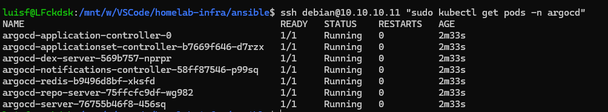
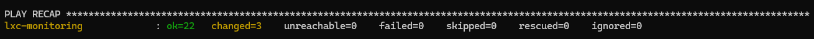
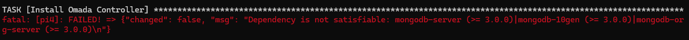

Terraform had done its job: three machines running on Proxmox, IPs allocated, SSH key injected. The next step was Ansible, which takes these raw VMs and transforms them into configured infrastructure: k3s running, NFS exporting volumes, PLG stack up, Pi4 with network services.
The code had been written since the trip. I knew there would be adjustments, but the idea was simple: run it, see what breaks, fix it, document it. Spoiler: quite a few things broke. Not for lack of planning, but because there is a real difference between writing code without hardware in front of you and running it in production.
# Before running any playbook
Two problems appeared right at the beginning, before any ansible-playbook.
The ansible.cfg being ignored
I ran the first ping to test connectivity and got the warning:
[WARNING]: Ansible is being run in a world writable directory, ignoring it as an ansible.cfg sourceThe project is located in /mnt/w/ which is the Windows filesystem mounted on WSL. Ansible rejects the ansible.cfg from world-writable directories for security. The simplest way was to export the environment variable for each session:
export ANSIBLE_CONFIG=/mnt/w/VSCode/homelab-infra/ansible/ansible.cfgDifferent users per machine type
I had put ansible_user: debian in vars.yml. It works for VMs, where cloud-init creates the debian user. But Proxmox LXC doesn't go through cloud-init the same way, so it only comes with root. Moving the user to inventory.ini per host solves it:
k3s-node ansible_host=10.10.10.11 ansible_user=debian
storage-server ansible_host=10.10.10.12 ansible_user=debian
lxc-monitoring ansible_host=10.10.10.13 ansible_user=rootWith that, ansible all -m ping returned green on all three machines.
# storage-server
First VM. The logic of running it in order makes sense because the k3s-node will mount NFS volumes that need to be exported beforehand.
btrfs instead of ext4
When I created the disk manually in Proxmox, I chose btrfs: native snapshots per subvolume, transparent compression with zstd, and checksumming against silent corruption. It makes a difference for a disk that will store Immich photos and Nextcloud files. The playbook reflected ext4. I fixed it:
- name: Create btrfs filesystem on storage device
community.general.filesystem:
fstype: btrfs
dev: "{{ storage_device }}"
opts: "-L data-sata"
force: false
- name: Get UUID of storage device
ansible.builtin.command:
cmd: blkid -s UUID -o value {{ storage_device }}
register: storage_uuid
changed_when: false
- name: Mount storage with btrfs options via fstab
ansible.builtin.mount:
path: "{{ storage_mount }}"
src: "UUID={{ storage_uuid.stdout }}"
fstype: btrfs
opts: defaults,compress=zstd,noatime
state: mountedThe force: false ensures it won't reformat if a filesystem already exists. Mounting using UUID instead of the device path (/dev/sdb) avoids issues if the disk detection order changes between reboots.
The right disk
First execution error: the playbook tried to format /dev/sda and mkfs.btrfs returned "device or resource busy". /dev/sda was the OS disk. The data disk was /dev/sdb. Inside Proxmox the disk appears one way, inside the VM the order can be different. Always double-check with lsblk inside the machine before pointing to any device in code.
Missing btrfs-progs
Failed to find required executable "mkfs.btrfs" in pathsmkfs.btrfs comes from the btrfs-progs package which was not in the playbook's installation list. I added it along with nfs-kernel-server:
- name: Install NFS package
ansible.builtin.apt:
name:
- nfs-kernel-server
- nfs-common
- btrfs-progs
state: presentWith these tweaks, the playbook ran clean, the NFS reload handler fired at the end, and the exports showed up in showmount -e localhost.
# k3s-node
Here the code was mostly correct, but I ran into an issue with ArgoCD.
The CRD is too large
The CustomResourceDefinition "applicationsets.argoproj.io" is invalid:
metadata.annotations: Too long: may not be more than 262144 bytesIt's a known ArgoCD bug with conventional kubectl apply. The CRD exceeds the annotation size limit. The --server-side flag uses server-side apply and bypasses this:
- name: Install ArgoCD
ansible.builtin.command:
cmd: kubectl apply -n argocd --server-side -f https://raw.githubusercontent.com/argoproj/argo-cd/stable/manifests/install.yamlWith this, the 7 ArgoCD pods came up without errors.

# lxc-monitoring
This one was the most work. Not because of the complexity of what runs on it, but because LXC has restrictions that VMs don't.
apt-key deprecated in Debian 13
Failed to find required executable "apt-key" in pathsapt-key was removed starting with Debian 12. The current way is to save the key in /etc/apt/keyrings/ and reference it via signed-by in sources.list. The apt_repository Ansible module still tries to use apt-key internally, so the workaround was to use copy directly:
- name: Add GPG key for Grafana
ansible.builtin.get_url:
url: https://apt.grafana.com/gpg.key
dest: /etc/apt/keyrings/grafana.asc
mode: '0644'
- name: Add Grafana repository
ansible.builtin.copy:
dest: /etc/apt/sources.list.d/grafana.list
content: "deb [signed-by=/etc/apt/keyrings/grafana.asc] https://apt.grafana.com stable main\n"
mode: '0644'The same pattern was later applied to Docker on the Pi4.
Tailscale doesn't start automatically on LXC
On VMs, the Tailscale installer already enables and starts tailscaled via systemd. On LXC this doesn't happen automatically, because containers have kernel access restrictions. The service started, but immediately crashed. The fix was to ensure the correct order:
- name: Ensure Tailscale is running and enabled on boot
ansible.builtin.service:
name: tailscaled
state: started
enabled: true
- name: Connect to Tailscale with auth key
ansible.builtin.command:
cmd: tailscale up --authkey="{{ tailscale_auth_key }}"
register: tailscale_up
changed_when: tailscale_up.rc == 0But it was still failing. The log revealed the real problem:
getLocalBackend error: CreateTUN("tailscale0") failed;
/dev/net/tun does not existTailscale needs the TUN device to create the virtual network interface. In unprivileged LXC, this device is not available by default. I had to manually add it to the container config in Proxmox:
echo "lxc.cgroup2.devices.allow: c 10:200 rwm" >> /etc/pve/lxc/120.conf
echo "lxc.mount.entry: /dev/net/tun dev/net/tun none bind,create=file" >> /etc/pve/lxc/120.conf
pct reboot 120The first line tells the kernel that the container can access the TUN device. The second mounts the host's /dev/net/tun inside the container. Without both together, it doesn't work.
keyctl also had to be enabled manually via pct set, because Proxmox doesn't allow changing feature flags via API unless you are root@pam. I added both to lxc_monitoring.tf as documentation of the desired state, with a comment explaining that the in-place apply will fail with 403 and must be done manually the first time.
Loki 3.x with schema v13
The Loki config was written with v2.x in mind: boltdb-shipper, schema v11, chunks_directory field. The current version is 3.7.2 and changed quite a bit:
schema_config:
configs:
- from: 2024-01-01
store: tsdb # was boltdb-shipper
object_store: filesystem
schema: v13 # was v11
index:
prefix: index_
period: 24h
storage_config:
tsdb_shipper: # was boltdb_shipper
active_index_directory: /var/loki/index
cache_location: /var/loki/cache
filesystem:
directory: /var/loki/chunks # was chunks_directoryAlso, Loki 3.x requires a WAL directory for the ingester. Without it:
creating WAL folder at "/wal": mkdir wal: permission deniedI added it to the config and the directory creation loop:
ingester:
wal:
dir: /var/loki/walBinary with wrong name
unarchive extracted the binary as loki-linux-amd64 but the service calls /usr/local/bin/loki. A symlink solves it and is cleaner than renaming:
- name: Create Loki symlink
ansible.builtin.file:
src: /usr/local/bin/loki-linux-amd64
dest: /usr/local/bin/loki
state: linkWith all that, the three services came up: Grafana on :3000, Prometheus on :9090, Loki answering ready on :3100 after about 15 seconds of ingester initialization.

# Pi4
The Pi4 was the most uncertain part. I installed Raspberry Pi OS Lite 64-bit based on Debian 13 Trixie, which is the current version. Configured the user, enabled SSH, and copied the public key with ssh-copy-id.
Omada and the MongoDB problem
The original playbook installed the Omada Controller directly via .deb. Omada depends on MongoDB, and MongoDB doesn't provide ARM64 binaries for Debian 13. I tested adding the repo manually, but the package simply doesn't exist for this architecture/distro combo.
The first idea was to move Omada to an LXC on Proxmox. I created lxc_omada via Terraform, separated the omada.yml playbook, and ran it. The service came up, but the LXC with 2GB of RAM sat at 98% memory usage just with MongoDB and Omada. That's not a healthy setup for something that needs to be available 24/7.

The solution was Docker. The mbentley/omada-controller image packages MongoDB and Java internally, without depending on anything from the host OS. I ran it on the Pi4 with a docker-compose managed by Ansible:
services:
omada-controller:
image: mbentley/omada-controller:latest
container_name: omada-controller
restart: unless-stopped
network_mode: host
environment:
- TZ=America/Sao_Paulo
- MANAGE_HTTPS_PORT: 8043
volumes:
- /opt/omada/data:/opt/tplink/EAPController/data
- /opt/omada/logs:/opt/tplink/EAPController/logs
deploy:
resources:
limits:
cpus: '1.0'
memory: 2048M
reservations:
memory: 512MThe Pi4 with 8GB handles it well. I destroyed lxc_omada with terraform destroy -target, removed lxc_omada.tf and omada.yml, and moved Omada back to the Pi4 via Docker.
UpSnap crashing due to missing $HOME
neither $XDG_CONFIG_HOME nor $HOME are definedThe UpSnap systemd service didn't have the $HOME variable defined. UpSnap uses PocketBase underneath, which needs to know where to create its config files. I added it to the service template:
[Service]
Environment=HOME=/root
ExecStart=/usr/local/bin/upsnap serve --http=0.0.0.0:{{ upsnap_port }} --dir=/mnt/data/upsnapNFS with root_squash blocking access
UpSnap comes up but couldn't create a file on the NFS mount:
touch: cannot touch '/mnt/data/upsnap/test': Permission deniedNFS exports with root_squash by default, which converts the client's root to nobody. The Pi4 runs UpSnap as root, so writing is blocked. I fixed the export options in vars.yml:
nfs_exports:
- path: /mnt/data/upsnap
clients: "{{ pi4_ip }}"
options: rw,sync,no_subtree_check,no_root_squashI ran storage-server.yml again, the NFS reload handler fired, and UpSnap started writing to the volume without errors.
# The Tailscale pattern that stayed
One thing I standardized across all playbooks during troubleshooting: the Tailscale order. The original block had creates: as an idempotency guard on tailscale up, but this broke silently. The state file is created when the daemon starts, not when it authenticates. So on the second run, Ansible skipped the command and the node remained unauthenticated.
The pattern that stayed on all hosts:
- name: Download and run Tailscale installation script
ansible.builtin.shell:
cmd: curl -fsSL https://tailscale.com/install.sh | sh
creates: /usr/bin/tailscale
- name: Ensure Tailscale is running and enabled on boot
ansible.builtin.service:
name: tailscaled
state: started
enabled: true
- name: Connect to Tailscale with auth key
ansible.builtin.command:
cmd: tailscale up --authkey="{{ tailscale_auth_key }}"
register: tailscale_up
changed_when: tailscale_up.rc == 0The creates: stays only on the script installation, not on tailscale up. Tailscale is idempotent by itself: if it's already authenticated with the same key, it does nothing.
# Final result
Four configured machines, all services running:
| Machine | Services |
|---|---|
storage-server |
NFS, Node Exporter, Tailscale |
k3s-node |
k3s, ArgoCD, Node Exporter, Tailscale |
lxc-monitoring |
Prometheus, Grafana, Loki, Node Exporter, Tailscale |
Pi4 |
Omada (Docker), MotionEye, UpSnap, Node Exporter, Tailscale |
Grafana is accessible on :3000, Prometheus is scraping metrics, ArgoCD is waiting for the homelab-gitops repo to start deploying. That's the next step: connect ArgoCD and spin up Nextcloud, Immich, Jellyfin, and Traefik via GitOps.
The code is on homelab-infra.